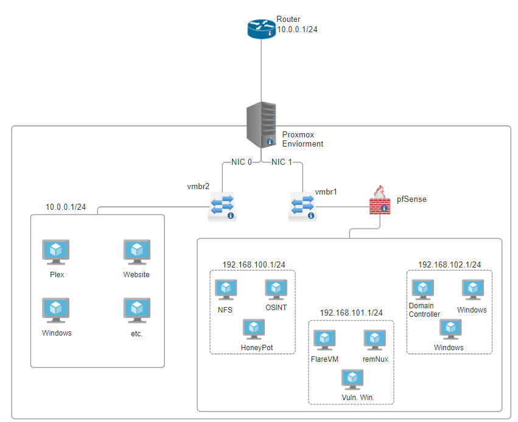

Malware Analysis Lab
Published on: November 30, 2023
Last Updated: June 16, 2024
Overview
This project has a focus on having a safe environment for practically anything you want to create, analyze, fix, and break. Within Proxmox, you can build out customized infrastructure to recreate any situation you find useful. An important feature that Proxmox can do to ensure the safety of your home network is isolation. Isolation allows everything to stay contained within the boundaries of what you want. While this post will not hold your hand and show you how to use Proxmox, it will show you what to build out to create the environment safely.
Before I dive into what my lab’s topology looks like and other detailed specifications, I will first explain what Proxmox is for some of the readers who might not know.
Proxmox is an just an open-source Virtual Environment platform that combines two virtualization technologies: KVM's (Kernel-based Virtual Machine) for virtual machines and LXC's (Linux Containers) for lightweight container-based virtualization. Since it is a type-one hypervisor, we will be able to really dive into some of the more advanced functionalities in the lab.
Below is a topology of my Lab.
My Topology Explained
In the topology, I have my Proxmox environment set up around the outer most box. Everything inside this box is all virtualized with no physical hardware. The server has several NICs, however I will only be utilizing 2 of them. NIC 0 being my “safe” network with legitimate software like plex, website, Minecraft server, etc. NIC 1 is the “unsafe” network, which is connected to a pfSense VM to act as a firewall between the router and the unsafe network. One special aspect of the unsafe network is the use of VLANs. I am utilizing my VLANs as subnet containers that are set by Proxmox. For example, all the devices contained within 192.168.100.1/24 are using VLAN 20. This way pfSense can contain each environment within its own network and making it easily repeatable. In short, Proxmox will set the VLAN for each VM and pfSense will set up the subnetting. Right now, I am only utilizing 3 subnets within the pfSense environment, however with the way I have it set up (192.168.0.1/16), I am able to create over 250 subnets each having over 250 devices on them. The only real limiting factor is system resources.
What’s nice about pfSense is its community forums for guidance as it is used in both home and enterprise environments, so you can find the answer to pretty much any issue/question you might face.
One step below our pfSense firewall are 2 VMs, remNUX and FlareVM. Both of these VMs allow us to do whats called Static and Dynamic Analysis on any malware sample we throw at it. More on this below.
pfSense
I utilize a couple of features in the firewall that serve specific purposes within the environment.
One of these features is a VPN to route malicious traffic outside my network in a reasonably safe way because the IP address the attackers will see won’t be my own home. This allows me to understand things like what replies are the C2’s giving to the malicious code thus further looking into the dynamic aspect. Another feature is the static rules that can be made to stop traffic all together. I use that when I want all traffic to stay contained within the environment it’s in.
remNUX
This is a Linux Distribution that was created to perform analysis on practically anything on a computer. It has a ton of tools that can take hours to understand the full breath of it all. I will dive more into this distro once we get acclimated with the topology and beginning analysis steps.
FlareVM
This is just a Windows OS with the “FlareVM” packages installed onto it. Yet another go to set of tools mainly because malware is most commonly exploited on Windows machines.